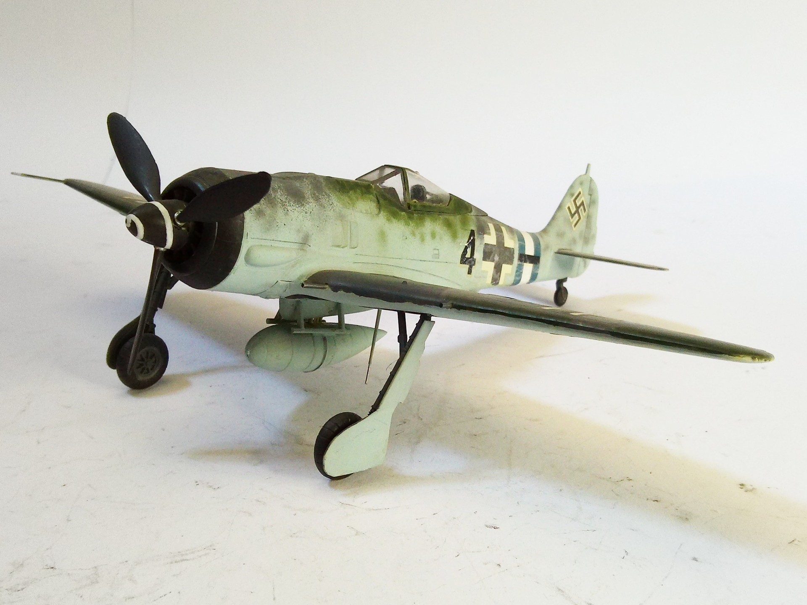
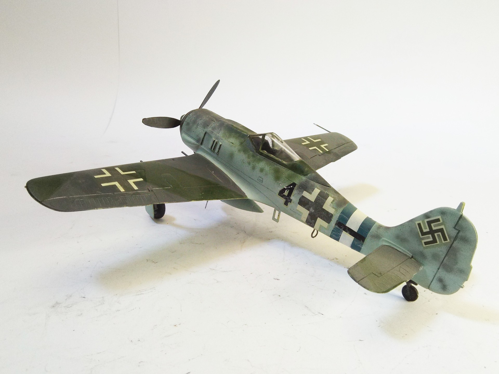

Aerei · scale model archive
Focke Wulf FW190 A8
Focke Wulf FW190 A8 — Kit: Otaki, Scale: 1/48. Jagdgeschwader 300 #1/48 #Otaki

Photo gallery

English description
Jagdgeschwader 300
#1/48 #Otaki
Descrizione italiana
Jagdgeschwader 300.